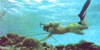
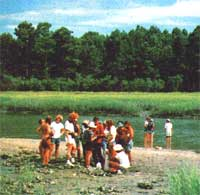
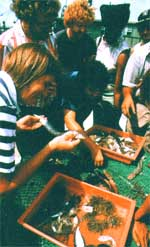
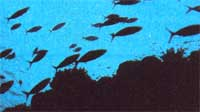
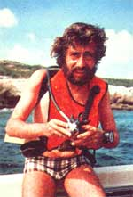
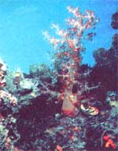
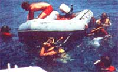
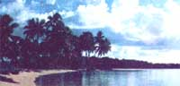

Yes, you can too take part in a genuine Cousteau ocean expedition this summer!
"I am 39 years old and you could say that I've been studying the oceans all my life. At the age of seven I was pushed overboard off the Calypso with an aqualung on my back and that was my first dive. I took to it very naturally and since that time I've spent every possible weekend, holiday, and vacation exploring the world's oceans ... studying the oceans and the effect that man has had upon them. It has been a very good education."
The man talking is Jean-Michel Cousteau. And just like his famous father-whom he definitely resembles-he is thin, wiry, and exceedingly knowledgeable. Also, like his father, he delivers very powerful and quite insightful environmental statements with a deceptively soft French accent.
"I have been quite lucky. I am one of the very few who have been involved in the pioneering era of underwater research from its beginning. I have been going back and diving in the same places for 32 years, and I have watched them deteriorate before my eyes. Where I used to see a fragile and beautiful marine life ... it is not there anymore. Where I used to see a clean ocean bottom ... it is now plastic bottles and discarded cans and other trash from our throwaway society. I know very well the effect that man is having on this planet."
And it is because he does know so well that Jean-Michel Cousteau-just like his father, Jacques-Yves, and his brother, Philippe-has become one of the planet's most dedicated environmentalists.
Unlike his more famous father and brother, however, Jean-Michel (in the manner of his mother, who is the completely unknown but real captain of the Calypso!) prefers to do his work quietly and behind the scenes.
We've all seen innumerable television specials and movies in which Jacques and Philippe and 25 or 30 other hardy Frenchmen don aqualungs and plunge into this sea or that ocean ... where they then proceed to ride whales, uncover fantastic historic artifacts, or make important environmental discoveries.
Very few of us, on the other hand, have seen the far less dramatic but vitally important day-to-day support work that makes such thrilling adventures possible: Mrs. Cousteau bucking up all those hairy-chested frogmen when they're 4,000 miles from France, have another two-month voyage ahead of them ... and are already homesick. Or Jean-Michel spending weeks and months buried in a processing lab, editing film, coordinating sound tracks, negotiating contracts, and handling the thousands of other "postproduction" details that must be attended to before Jacques and Philippe's exciting exploits can reach the screen.
None of this brief discussion of what goes on "behind the scenes" of Jacques Cousteau's organization, of course, is meant to detract from the very obvious devotion, intelligence, and energy that Jacques, Philippe, and other publicized members of the group bring to their incredibly important work.
It is, however, meant to be an introduction to a rather amazing man whom you've probably never heard of ... but who (although modest) is just as devoted, intelligent, and energetic as his better-known father and brother. And it is also meant to be an introduction to a very exciting new non-profit foundation that is dedicated to the well-being of mankind and the protection and preservation of the environment.
For Jean-Michel Cousteau, you see-although he still works closely with his father and sees the rest of his family as often as he can-is now in the process of setting up his own organization-a public, non-profit foundation-on Hilton Head Island, South Carolina. And that new foundation-The Jean-Michel Cousteau Institute-is, as mentioned above, dedicated to the well-being of mankind throughout the world and the protection and preservation of the environment "with which we must live in harmony if our species is to survive".
Eventually Jean-Michel's foundation will produce television programs, documentary films, and educational filmstrips of its own. It will also publish educational materials and research reports, develop and conduct programs in applied research, act as an intermediary between governments and institutions and industries and the public, translate complex environmental issues into understandable language, and tackle many other knotty problems. Work, in fact, is already progressing in several of these areas.
There is another far more interesting part of The Jean-Michel Cousteau Institute's work (a part that you can get in on!), though, that we want to mention here. This is something known as Project Ocean Search' and what it is is a series of field expeditions to all parts of the world and all personally led by Jean-Michel Cousteau himself. (And hasn't each one of us secretly dreamed of exploring tropical shores, underwater reefs, and exotic marine life with one of the Cousteaus!)
Although the size of any one of these expeditions is usually limited to no more than 50 participants (so that everyone can work closely with Jean-Michel and other members of the group), anyone who is 16 years old or older and in good health may apply. Diving skills are not a prerequisite (since all projects are designed to accommodate divers and non-divers alike), although any participant who desires to take part in the SCUBA portions of an expedition must possess personal diving equipment and a certificate of competency, and must demonstrate his or her proficiency to the Project divemaster.
In addition to Jean-Michel himself, the core group of each Project Ocean Search',') expedition includes marine scientists, a logistics staff, a guest faculty that has specialized in the locations being studied, a physician, and-of course-a qualified divemaster.
And what does one of the P.O.S. expeditions study? Why, the same things you've seen other Cousteau expeditions study on countless television programs and in Academy Award-winning movies: the natural history of local marine life, the ecology of fishes, sea turtles, kelp forests, global pollution, estuarine ecology, oceanography, plankton, reefs and beaches, coral growths and sponges, salt marsh ecology, sharks, ocean farming, underwater photography, water currents and tides, and a hundred other interesting topics. And talk about flexibility! P.O.S. participants who want to conduct specific studies during a particular expedition are encouraged to contact the Institute well before their trip takes place ... so that the requested project can be incorporated into the program!
Another interesting point: Thanks to the cooperation of the University of Southern California's College of Continuing Education, optional academic credit can even be earned by any P.O.S. participant who chooses to complete certain academic papers at the end of an expedition.
It should be pointed out, too, that although Jean-Michel's Institute itself is a brand-new operation ... the Project Ocean Search expeditions are not. Jean-Michel and his right-hand man, Francois R. Brenot, have been conducting these field studies for five full years now ... and every year's program is always better than the one before. People come away from these trips changed, with a new vision of man's rightful place on the planet and deep insights into the ways in which humankind can preserve the earth, its oceans, its atmosphere, and its myriad forms of life.
Or, to put it another way: The movie Close Encounters has been a moving experience for a lot of folks but it is, after all, only a movie ... a fantasy . . . a made up story that never really happened. If you want the same kind of experience-but FOR REAL-try one of the Project Ocean Search expeditions.
And you've got a nice selection to choose from during the season (summer 1978) that's just coming up: How about ten days on an island off the coast of South Carolina studying, among other things, one of the least touched salt marshes still left in North America? Or ten days conducting a variety of experiments on southern California's Santa Catalina Island? Or three weeks in the Caribbean's Lesser Antilles and/or Gulf of Honduras mixing sun and fun with serious scientific projects? Or a whopper full month in the western islands of the Bismarck Archipelago off New Guinea in the South Pacific, living next to one of the friendliest and most primitive tribes left in the world, enjoying scenery and diving on reefs that few people have ever seen, and studying tropical flora and fauna and sea life that-in some cases-no longer exists in any other part of the planet?
For more information-costs, expedition dates, programs of study, etc.-contact Francois R. Brenot, The Jean-Michel Cousteau Institute, P.O. Drawer CC, Harbour Town, Hilton Head Island, South Carolina 29928. And do send along a dollar for a reply (like all the really good organizations doing truly valuable work these days, this one operates on a shoestring) ... and do get your letter into the mail immediately.
Only a very limited number of people can be accepted for each expedition. For that reason we're anxious to see some of the best folks in the world (the readers of this magazine) take part in one of the most exciting programs (Project Ocean Search,,) that anybody, anywhere is offering this summer.
|
 |
 |
 |
|
 |
 |
 |
|
 |
 |
|